RoboSnap：用于通用机器人学习与评测的一次性真实到仿真场景生成RoboSnap: One-Shot Real-to-Sim Scene Generation for Generalizable Robot Learning and Evaluation
偏 real-to-sim 与机器人学习，和 SLAM/GNSS 间接相关；但展示 3DGS 重建结果转化为仿真基础设施的趋势，值得低优先级关注。
一句话工作总结
从单张真实图像生成可交互仿真场景，用 3DGS 保留背景视觉层以服务机器人学习。
摘要
RoboSnap 是一个 real-to-sim 框架，目标是从单张 RGB 图像生成可交互仿真场景，用于通用机器人学习和可复现实验评测。方法采用分层设计：前景交互区域通过 collision-aware asset refinement 保证物理稳定，背景则用 3D Gaussian Splatting visual layer 保持新视角下的视觉真实感。作者还基于 DROID 构建了包含 564 个真实场景的 DROID-Sim 数据集，展示恢复场景可用于轨迹回放、合成数据生成和策略评估。
Recovering real-world scenes as interactive simulation environments can enable generalizable robot learning and reproducible policy evaluation. However, constructing scenes that are both physically stable and visually faithful remains slow and expensive. In this work, we present RoboSnap, a real-to-sim framework that turns a single RGB image into a simulation-ready scene. The key idea is a layered design that separates the physics-critical interaction area from the surrounding visual context: collision-aware foreground assets are refined for stable robot interaction, while a 3D Gaussian splatting visual layer preserves faithful background appearance under novel views. Experiments on DROID scenes and real-robot tasks show that RoboSnap achieves reliable trajectory replay in the recovered scenes, supports task-specific synthetic data generation for policy training, and yields meaningful sim-real correlation for policy evaluation. To further support real-to-sim research, we introduce DROID-Sim, a real-to-sim companion dataset constructed from 564 real-world scenes in DROID. Extensive experiments suggest that the value of real-to-sim methods lies not only in high-fidelity visual reconstruction, but in turning real environments into reusable infrastructure for robot learning and evaluation.
中文解读摘录
- 链接：https://arxiv.org/abs/2607.06699 ｜ PDF：https://arxiv.org/pdf/2607.06699 ｜ 项目页：https://robosnap.github.io
- 中文题名：RoboSnap：用于通用机器人学习与评测的一次性真实到仿真场景生成
- 关键信息：从单张 RGB 图像恢复可交互仿真场景；用 layered design 分离物理交互关键前景资产和 3DGS 背景视觉层，并构建 DROID-Sim 数据集（564 个 DROID 真实场景）。
- 为什么值得看：更偏 real-to-sim/robot learning，但 3DGS 被作为背景视觉保真层，体现“重建结果转化为可复用仿真基础设施”的趋势；对机器人数据生成、策略评测和场景资产构建有间接价值。
- 需要核查：单图尺度/碰撞几何恢复可信度、物理稳定性与视觉保真之间的取舍、DROID-Sim 数据许可，以及与多视图/视频重建输入的扩展方式。
图表/页面预览
{kind=link}
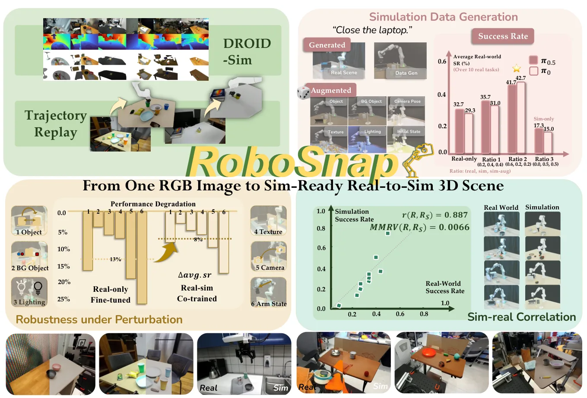
{kind=link}
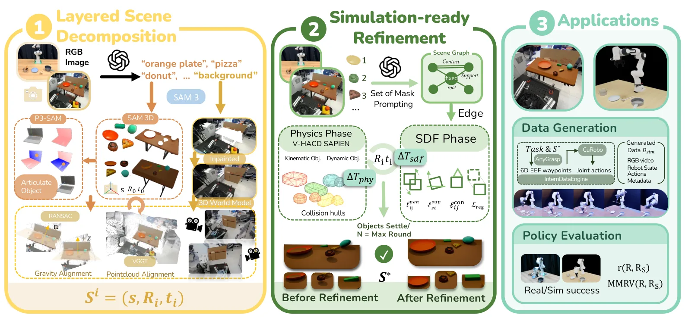
{kind=link}
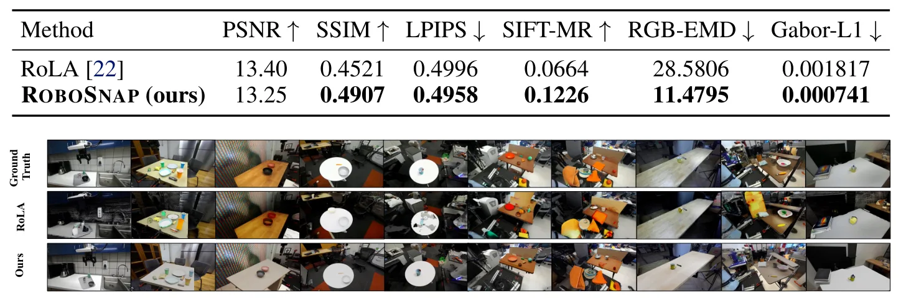
{kind=link}
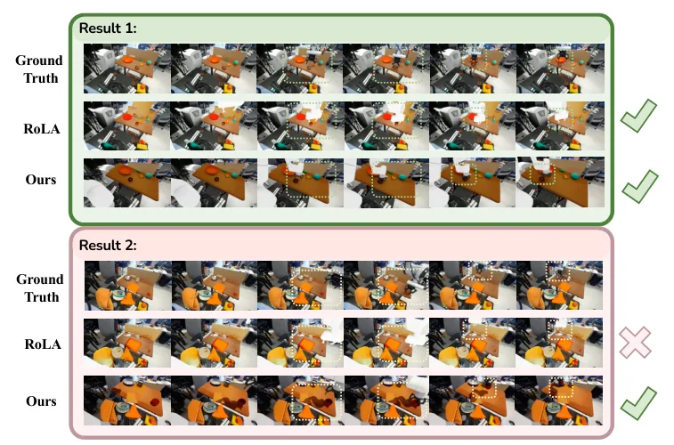
{kind=link}
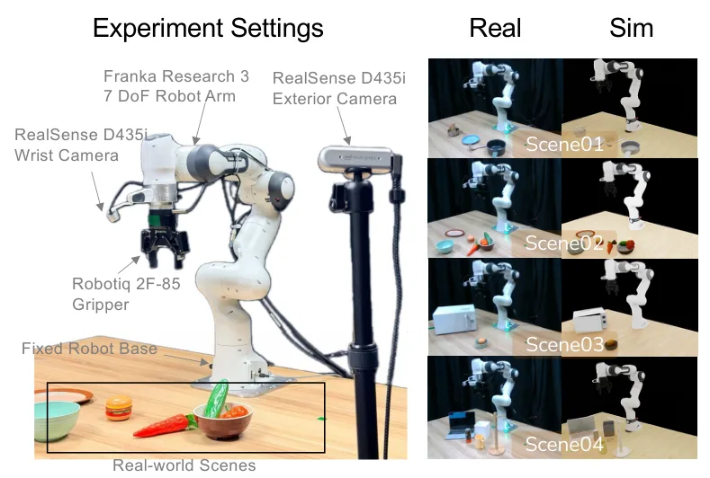
{kind=link}
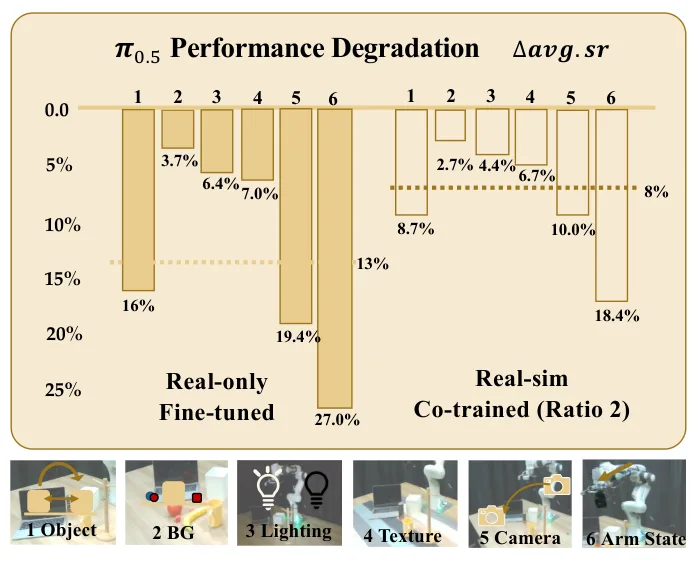
{kind=link}
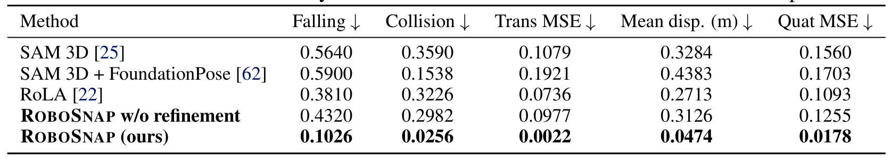
{kind=link}
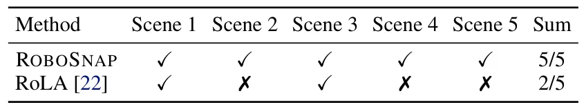
{kind=link}
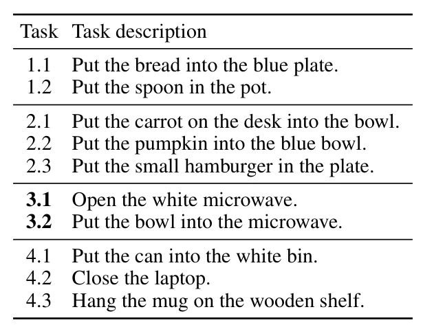
{kind=link}
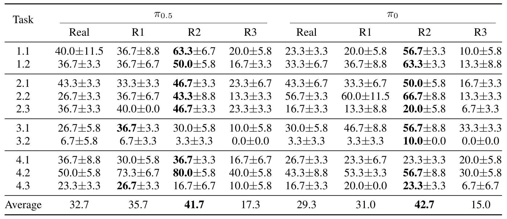
{kind=link}
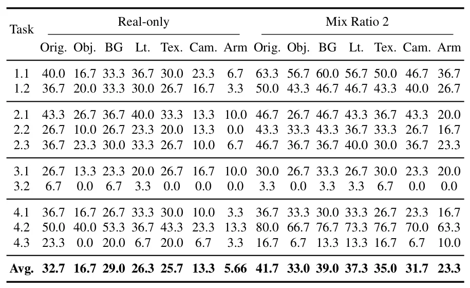